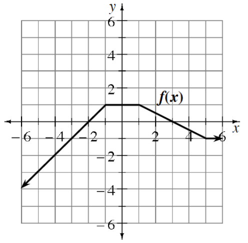

Give a specific example to show that the following equation is false.
\(\log(M)-\log(N)=\log\left(\frac{M}{N}\right)\)
Evaluate each the following expressions without a calculator.
\(\log(1)\)
\(\ln(1)\)
\(\log(10^3)\)
\(\ln(e^3)\)
THE MEANING OF DECIMAL EXPONENTS
Express \(0.7\) as a fraction, and rewrite \(10^{0.7}\) using this fraction.
The power property of exponents can be used to break up this fraction into two factors. Write the value of \(c\) so that \(10^{0.7}=(10^c)^d\).
Rewrite your answer to part (b) as a root of \(10\) raised to a certain power by copying and filling in the blanks of \((\sqrt[a]{10})^b\).
Why is it generally better to take the root first, especially when you are working without a calculator?
Use a calculator to evaluate your expression from part (c).
Now calculate \(10^{0.7}\). How does this answer compare with the previous one?
Reshma notices that the answer for \(10^{0.7}\) is close to \(5\). Kahlil knows she can get a value closer to \(5\) by using more decimal places in the exponent. Use guess and check to determine \(p\) (to the nearest \(0.001\)) so that \(10^p\) is as close to \(5\) as possible.
In a flash of brilliance, Reshma suddenly knows how to get several more decimal places instantly. What keys can she press on her calculator to do this?
Congratulations! Your rich old Uncle Lew has bestowed \(\$10{,}000\) upon you. You get to decide which account is more beneficial to place the money in over the course of one year. The choice of accounts is \(5.25\%\) compounded quarterly or \(5\%\) compounded continuously. Which account would be the most beneficial if you left the money in it for one year?
Let \(f(x)=x^4-4x^3-6x^2+20x-75\).
Identify all of the roots of the function.
Use the roots to sketch a prediction of what you think the graph of \(y=f(x)\) will look like.
Use a graphing calculator to check your prediction.
If \(g(x)=x(x+2)(x-3)\), where are the asymptotes of \(y=\frac{1}{g(x)}\)?
If \(\sin(\theta)=\frac{4}{5}\) and \(\frac{\pi}{2}<\theta<\pi\), what is \(\cos(\theta)\)?
Rewrite each of the following expressions as a single fraction without negative exponents.
Use the properties of logarithms to rewrite each of the following expressions using a single logarithm.
\(\log(4)+\log(2)-\log(5)\)
\(\log_3(72)+\log_3(2)-\log_3(8)\)
\(\ln(9)+\ln(9)+\ln(9)\)
\(\ln(e)-\ln(7)+\ln(2)\)
Rewrite each expression in the form \(a(b)^x\).
Rewrite each of the following rational expressions as a single fraction.
Using the graph of \(y=f(x)\) at right, sketch a graph of each of the following transformations.

\(y=-2f(x)\)
\(y=f(-x)+1\)
\(y=\frac{2}{f(x)}\)
If \(f(x)=x^2+7x+9\), evaluate:
\(f(-3)\)
\(f(i)\)
\(f(-3+i)\)
Solve each of the following inequalities.
Draw a unit circle on your paper, then sketch the following angles.
\(2\) radians
\(10\) radians
\(\pi+1\) radians
Estimate the solution to each of these equations without a calculator and justify your estimate.
\(20^x=316\)
\(7.3^x=481\)
\(160(0.5)^x=8\)